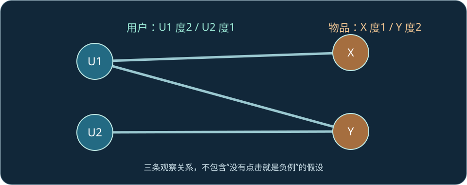
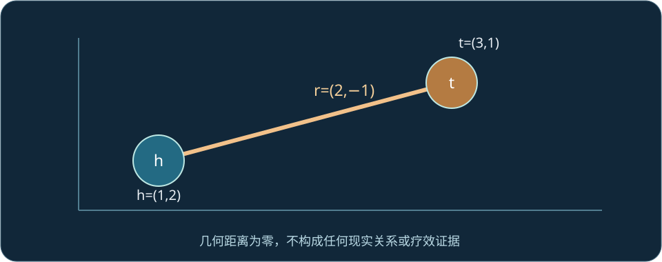
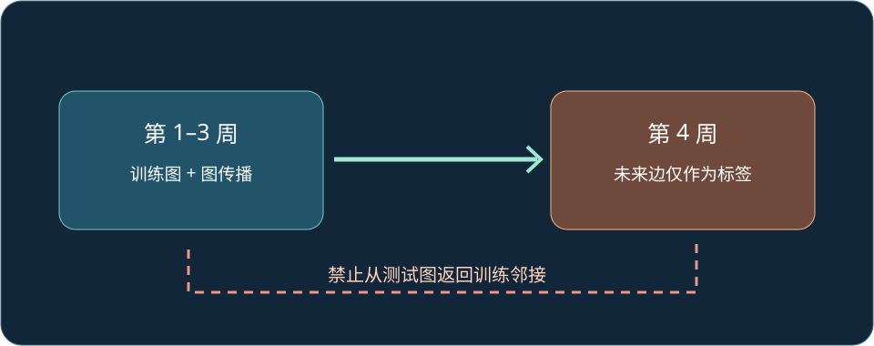

GRAPH RECOMMENDATION / COLLABORATIVE FILTERING / KNOWLEDGE GRAPHS
第26章 网络科学+机器学习
推荐的交互边从何而来？LightGCN 为什么按度归一化？BPR 如何学习排序？知识图谱如何与用户—物品图分开建模？
1. 先定义图：用户和商品连接意味着什么？
图推荐的基础对象是二部图 G=(U∪I,E)，U 是用户集、I 是物品集，一条边 (u,i) 表示某时间窗内观察到的某种行为——点击、购买、收藏或观看。用户—用户的社交边与用户—物品的点击边语义不同：合并这两类边前，必须区分节点和关系类型、方向、时间、事件次数与可见性。用户没有点击某物品，可能是没有被曝光、物品尚未上架或埋点丢失，未观测到不等于“不喜欢”。
考虑两名用户 U1、U2 和两个物品 X、Y：U1 与 X、Y 有观察交互，U2 只与 Y 有交互。这张无向二部图共有 4 节点、3 条边，度数为 d(U1)=2、d(U2)=1、d(X)=1、d(Y)=2；没有 U1—U2 这样的实边。真实推荐应用应保留曝光、反馈和事件时间，使统计相关、用户兴趣和平台选择机制不被混为同一事物。

| 数据记录 | 关系含义 | 不能直接推断 |
|---|---|---|
| impression | 用户有机会看到某物品 | 会产生兴趣 |
| click | 某次曝光后点击 | 长期真实偏好 |
| purchase | 按某价格完成交易 | 物品对所有用户都适用 |
| 无日志 | 观察窗口中没有该行为 | 物品被明确否定 |
| 未来事件 | 测试窗口才会出现的边 | 训练时可以提前用来算邻居 |
2. LightGCN 的双向归一化传播：不等同于普通平均
LightGCN（He 等，SIGIR 2020）针对协同过滤，使用用户—物品二部邻接 A 的对称度归一化传播 S=D⁻¹/²AD⁻¹/²，减少普通 GCN 常见的特征变换与非线性层；节点初始嵌入可作为可学习参数。若 E⁽⁰⁾∈R⁽|U|+|I|⁾×d，传播 E⁽ℓ+1⁾=SE⁽ℓ⁾，最终将各层按权重 αℓ 融合。这里的 E 不是标签矩阵。与一般 GCN 不同，本页展示的基础 LightGCN 没有自动加入自环，因此不能机械套用前一章 GCN 的 A+I。
只让物品 X 的一维初始信号 e(X)=1，其余节点信号为 0。U1 从 X 接收的归一化权重是 1/√(d(U1)d(X))=1/√2≈0.707107，而不是把两个邻居 X、Y 直接均值后得到的 1/2。U2 的结果是 0，因为其唯一邻居 Y 当前输入为 0。此处只是单层算子的黄金测试，没有训练 LightGCN，也没有评价推荐效果。
交互：观察归一化与普通均值的差异
当前算子不含自环，Y 初值为 0；这不是预测概率。
高频物品度数高会影响归一化权重，交互不均匀会导致表示更容易向热门区域传播。对于孤立节点 d=0，应显式处理除零，而不是将 NaN 当合法向量；层数增多也不能保证泛化能力提升。
3. BPR：从一个正例和一个未观测候选构造排序目标
Rendle 等（UAI 2009）的 BPR 以 (u,i,j) 三元组学习：i 是训练期观察正反馈，j 是按明确规则抽出的未观察候选。令 Δ=s(u,i)−s(u,j)，最小化 -logσ(Δ)=log(1+e⁻Δ)。它逼近的是相对排序，不是把 σ(Δ) 直接解释成某用户点击物品的校准概率；被采为负例的 j 也未必是用户明确拒绝的物品。
Δ=0 的损失为 ln2≈0.693147；Δ=2 的损失约为 0.126928；Δ=−2 时约为 2.126928。真实训练中还需注明正则项、梯度更新、采样分布、物品可用性与数据时间窗口。
交互：调整正负物品打分差
完全由公式生成的合成值，不代表任何业务 A/B 实验。
4. 知识图谱的关系三元组与 TransE 平移几何
知识图谱将事实表示为 (h,r,t)，分别是头实体、关系类型和尾实体。比如 (药物甲,作用于,蛋白 P) 和 (蛋白 P,关联,疾病 D) 使用不同的关系；即便构成路径，也不能推出药物甲可以治疗疾病 D。TransE（Bordes 等，NeurIPS 2013）用 h+r≈t 约束低维向量，常用 L1 或 L2 距离。人工二维例子 h=(1,2)、r=(2,−1)、t=(3,1) 给出距离 0；替换 t=(3,2) 则距离为 1，数值仅核对几何机制，不能鉴定现实事实。

对一对多、对称和复杂复合关系，单纯的平移假设可能不足；R-GCN 等其他模型以多关系特定参数处理图结构，但其建模选择仍要与任务、数据量和权限相匹配。负三元组应遵守实体类型与观察边界，避免用未知即假的闭世界假设。
5. 时间切分为何必须先于图传播？
预测第 4 周会出现的用户—物品边，就要把第 1–3 周事件构成训练图，再计算所有节点度数、邻居、负采样候选和嵌入。把全时间图拿来跑图神经网络，再分割最后的监督标签会提前读取未来邻接，属于结构泄漏。

还必须固定候选空间：全物品候选评估与每个正样本配 99 个负样本的评估通常不可直接比较。Recall@K 是 K 个结果中命中的相关物品数除以该用户测试时窗全部相关物品数；没有正例的用户要定义剔除还是记零。OGB 不同子任务采用的指标与切分协议不同，应使用官方评估器，而不是仅引用一个数字。
6. 标准库可执行的数学验证代码
from math import exp, log1p, sqrt, isclose
def lightgcn_one_step(x):
return x / sqrt(2 * 1)
def bpr_loss(delta):
return log1p(exp(-delta))
def transe(h, relation, tail):
return sqrt(sum((a + b - c) ** 2
for a, b, c in zip(h, relation, tail)))
assert isclose(lightgcn_one_step(1), 1 / sqrt(2))
assert isclose(bpr_loss(0), log1p(1))
assert isclose(bpr_loss(2), 0.1269280110429725)
assert isclose(transe((1, 2), (2, -1), (3, 1)), 0)
assert isclose(transe((1, 2), (2, -1), (3, 2)), 1)
print("lightgcn=", round(lightgcn_one_step(1), 6),
"bpr(2)=", round(bpr_loss(2), 6))这些数值的证明不依赖训练框架或互联网，适合作为 Lightning/PyTorch 版实现前的黄金单测。真实项目还要补训练集数据契约、曝光信息、模型参数、消融、验证集选型和多个随机种子；本例没有训练模型，不声称任何外部数据集的 Recall 提升。
7. 当图关系弱于内容信号时，应如何选择基线？
用户互动极少、新物品比例高、属性图延迟大或数据授权不清时，简单 popularity、内容相似性或双塔召回可能更适合。图上传播也可能放大热门物品的曝光优势；加入更多社会边不会自动提升用户满意度。有效的研究路线应依次回答行为语义、时间可见性、候选池、基线、任务指标、部署成本与伦理风险。
研究级交叉验证：LightGCN 传播必须隔离未来用户行为
二部图 U1–X、U1–Y、U2–Y 中，基础 LightGCN 无自环传播的 U1–X 权重为 1/√2。如果 U2–X 是未来才出现的点击，提前纳入训练会把 X 的度升至2，令 U1–X 权重降到 1/2，同时制造一条训练时不该存在的 U2–X 传播路径。未观察并不等于被明确拒绝。
研究页展示合法时间切分和故意泄漏的反例，并链接公开数据静态核验与可执行实验。进入跨章审计和复现实验 →
原始论文、协议与核验边界
- Rendle 等（2009），BPR。
- He 等（2020），LightGCN。
- Bordes 等（2013），TransE。
- OGB Link Prediction 官方拆分及评估器协议。
- Schlichtkrull 等，R-GCN 多关系建模。
所有图形和程序均为合成的数学教学实验；没有训练 LightGCN、复现论文 benchmark 或使用真实用户数据。